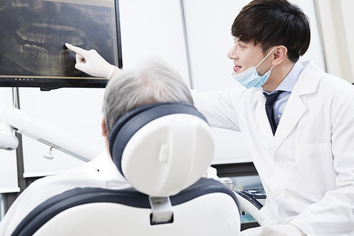

치주수술 주의사항
- 뜨겁거나 단단한 음식은 피하고 부드러운 음식, 우유, 주스 등을 드십시오.
- 술, 담배, 탄산음료, 매운 음식 등 자극적인 것은 피하십시오.
- 심한 운동이나 힘든 일은 피하고 휴식을 취하십시오.
- 약은 처방에 따라 반드시 복용하십시오.
- 수술한 날에는 수술부위에 얼음찜질을 해 주십시오.
- 수술 당일에는 약간씩 피가 흘러 나올 수 있으나 심하게 붓고 통증이 있으면서 피가 많이 나오면 병원에 나오십시오.
- 잇몸에 붙인 치주포대에는 칫솔질을 하지 마시고 떨어지면 병원에 오시기 바랍니다.